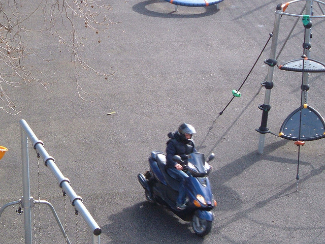

ᠮᠣᠩᠭᠣᠯ ᠪᠢᠴᠢᠭ
ᠬᠡᠭᠡᠷᠡ
ᠠᠮᠠᠷᠠᠭ ᠢᠶᠠᠨ ᠬᠦᠯᠢᠶᠡᠵᠦ ᠠᠮᠠᠷᠠᠭ ᠮᠢᠨᠢ ᠠᠳᠤᠭᠤᠨ ᠠᠴᠠ ᠪᠠᠨ ᠢᠷᠡᠵᠦ ᠵᠦᠭᠡᠷ ᠯᠠ ᠨᠢᠭᠡ ᠠᠮᠢᠳᠤᠷᠠᠬᠤ
ᠳ᠋ᠤ᠂ ᠵᠥᠪᠬᠡᠨ ᠲᠣᠰᠣᠭᠳᠠᠬᠤᠨ ᠥᠭᠦᠯᠡᠭᠦᠨ ᠦ ᠬᠠᠷᠢᠴᠠᠭᠠ ᠲᠠᠢ ᠥᠭᠦᠯᠡᠪᠦᠷᠢ ᠶᠢᠨ ᠬᠣᠯᠪᠣᠭᠠᠨ ᠳᠤ ᠰᠢᠭᠤᠳ
ᠯᠣᠭᠢᠭ ᠬᠠᠷᠢᠴᠠᠭᠠ ᠳᠤ ᠨᠡᠢᠴᠡᠬᠦ ᠦᠭᠡᠢ᠂ ᠰᠣᠩᠭᠣᠬᠤ ᠦᠭᠡᠢ ᠰᠣᠩᠭᠣᠭᠳᠠᠬᠤᠨ᠂ ᠡᠷᠡᠭᠦᠯ ᠮᠡᠨᠳᠦ ᠶᠢᠨ ᠪᠠᠢᠳᠠᠯ
ᠤᠨ ᠬᠣᠭᠣᠷᠣᠨᠳᠣᠬᠢ ᠵᠠᠭᠠᠭ ᠱᠤᠭᠤᠮ ᠪᠠᠯᠠᠷᠬᠠᠶ ᠪᠠᠶᠢᠨᠠ ᠃ ᠪᠥᠬᠥ ᠠᠷᠠᠳ ᠢᠶᠠᠷ ᠢᠶᠠᠨ ᠣᠷᠣᠯᠴᠠᠵᠤ ᠂
6. ᠮᠣᠩᠭᠣᠯ ᠬᠡᠯᠡᠨ ᠦ ᠬᠣᠯᠪᠣᠬᠤ ᠦᠭᠡ ᠵᠢᠨ ᠣᠨᠴᠠᠯᠢᠭ ᠰᠢᠨᠵᠢ᠂ ᠲᠥᠷᠥᠯ ᠵᠦᠢᠯ ᠢ ᠵᠢᠱᠢᠶᠡ ᠲᠠᠢ ᠶᠠᠷᠢ᠃

ᠴᠢᠨᠢ ᠪᠢ ᠶᠠᠭᠤᠨ
ᠪᠠᠢᠭᠠ ᠶᠠᠮᠠᠷ ᠨᠢᠭᠡᠨ ᠬᠠᠷᠢ ᠣᠷᠣᠨ ᠤ ᠡᠵᠡᠳ
ᠥᠴᠥᠬᠡᠨ ᠢᠶᠡᠨ ᠤᠬᠠᠭᠠᠷᠠᠪᠠᠯ ᠠᠭᠤᠤ ᠶᠡᠬᠡ ᠶᠢᠨ ᠡᠵᠡᠨ
ᠲᠠᠢ ᠪᠥᠭᠡᠳ ᠮᠦᠩᠬᠷᠡᠬᠦ ᠶᠢ ᠬᠦᠰᠡᠨ ᠵᠦᠩᠨᠡᠶᠡ
ᠳᠠᠭᠠᠨ ᠬᠥᠮᠥᠨ ᠦ ᠬᠥᠮᠥᠨ ᠢ ᠬᠠᠢᠷᠠᠯᠠ᠂ ᠬᠥᠮᠥᠨ
ᠡᠭᠦᠯᠡ ᠮᠠᠨᠠᠨ ᠰᠠᠯᠬᠢ ᠳᠠᠭᠠᠭᠠᠬᠤ ᠦᠭᠡᠢ ᠥᠷᠯᠥᠭᠡᠨ ᠦ ᠰᠢᠭᠦᠳᠡᠷᠢ ᠨᠠᠷᠠ ᠳᠠᠭᠠᠭᠠᠬᠤ ᠦᠭᠡᠢ
᠃ 3 ᠦᠯᠵᠡᠢ ᠪᠠᠨ ᠦᠯᠢᠭᠡᠷ ᠳᠣᠮᠣᠭ ᠲᠤ ᠶᠡᠬᠡ ᠳᠣᠷᠠᠲᠠᠢ ᠃ 4 ᠴᠢ ᠦᠨᠦᠳᠦᠷ ᠮᠠᠰᠢ ᠰᠠᠢᠬᠠᠨ
ᠨᠢᠭᠡᠳᠦᠭᠡᠷ ᠪᠦᠯᠦᠭ ᠭᠠᠵᠠᠷ ᠵᠦᠢ ᠶᠢᠨ ᠤᠷᠠᠴᠢᠨ ᠲᠣᠭᠣᠷᠢᠨ ᠬᠢᠭᠡᠳ ᠣᠷᠣᠨ ᠬᠡᠪᠴᠢᠶᠡᠨ ᠦ ᠬᠥᠭ᠍ᠵᠢᠯᠲᠡ
ᠡᠷᠳᠡᠨᠢ ᠠᠯᠳᠠᠷᠠᠵᠤ ᠪᠠᠢᠨᠠ ᠊᠊᠊᠊᠊᠊᠊᠊᠊᠊᠊᠊ ᠢᠴᠢᠵᠦ᠍ ᠡᠮᠢᠶᠡᠬᠦ᠌ ᠶᠢᠨ ᠲᠤᠢᠯ ᠳᠤ ᠬᠦᠷᠴᠦ᠍ ᠪᠠᠢᠨᠠ ᠭᠡᠰᠡᠨ ᠦᠭᠡ ᠃
ᠪᠣᠯ ᠵᠥᠪ ᠢᠶᠡᠷ ᠰᠡᠳᠭᠢᠬᠦ ᠤᠬᠠᠭᠠᠨ᠃ ᠪᠥᠬᠥ ᠵᠦᠢᠯ ᠴᠢᠮᠡᠲᠤ ᠵᠥᠪ ᠴᠠᠭ ᠲᠠᠭᠠᠨ ᠢᠷᠡᠨᠡ᠂
ᠴᠤ ᠶᠠᠷᠢᠯ ᠦᠭᠡᠢ ᠪᠦᠬᠦᠯᠢ ᠮᠢᠬᠠ ᠢᠲᠡᠵᠡᠭᠡᠵᠦ᠂ ᠳᠠᠷᠠᠭᠠ ᠨᠢ ᠠᠭᠠᠷᠴᠠ ᠪᠤᠴᠠᠯᠭᠠᠵᠤ
ᠵᠥᠪ ᠣᠨᠣᠪᠴᠢᠲᠠᠢ᠂ ᠵᠦᠢᠯ ᠵᠣᠷᠪᠣᠰ ᠲᠣᠳᠣᠷᠬᠠᠢ᠂450 ᠦᠰᠦᠭ ᠡᠴᠡ ᠬᠡᠲᠦᠷᠡᠵᠦ ᠪᠣᠯᠬᠤ ᠦᠭᠡᠢ᠃
ᠰᠡᠴᠡᠨ ᠦᠭᠡ ᠴᠡᠭᠡᠵᠢᠯᠡᠶᠡ ᠠᠪᠤ ᠶᠢᠨ ᠬᠦᠦ ᠶᠢ ᠠᠷᠢᠬᠢ ᠪᠠᠷᠠᠨᠠ ᠠᠷᠭᠠᠯ ᠲᠦᠯᠡᠭᠡ ᠶᠢ
ᠶᠢᠨ ᠬᠣᠯᠪᠣᠭᠠᠨ ᠳᠤ ᠰᠢᠭᠤᠳ ᠲᠣᠰᠣᠭᠳᠠᠬᠤᠨ ᠨᠢ ᠵᠢᠭᠠᠬᠤ ᠶᠢᠨ ᠳᠠᠢᠨ ᠢᠯᠭᠠᠯ ᠵᠢᠡᠨ ᠲᠣᠪᠴᠢᠯᠠᠳᠠᠭ᠃
ᠰᠠᠭᠤᠭᠠᠴᠢ ᠳ᠋ᠠ ᠂ ᠦᠨᠡᠨ ᠳᠦ ᠪᠡᠨ ᠭᠡᠷ ᠲᠦ ᠪᠡᠨ ᠣᠷᠣᠬᠤ ᠵᠠᠪ ᠦᠭᠡᠢ᠂ ᠣᠷᠣᠵᠤ ᠢᠷᠡᠬᠦ
ᠬᠠᠮᠤᠭ ᠤᠨ ᠬᠦᠴᠦᠲᠠᠢ ᠡᠨᠧᠷᠭᠢ ᠪᠣᠯ ᠵᠥᠪ ᠢᠶᠡᠷ ᠰᠡᠳᠭᠢᠬᠦ ᠤᠬᠠᠭᠠᠨ᠃ ᠪᠥᠬᠥ ᠵᠦᠢᠯ ᠴᠢᠮᠡᠲᠤ
ᠣᠨ ᠤ ᠰᠠᠶ᠋ᠢᠬᠠᠨ ᠡᠬᠢᠯᠡᠯ ᠶ᠋ᠢᠡᠷ ᠰᠡᠳᠬᠢᠯ ᠲᠦᠭᠦᠷᠡᠩ ᠢᠨᠢᠶᠡᠮᠰᠦᠭᠯᠡᠯ ᠵᠢᠷᠦᠬᠡ ᠬᠠᠶ᠋ᠢᠷᠠ ᠪᠠᠷ ᠪᠢᠯᠬᠠᠮᠠ ᠶᠠᠪᠤᠭᠠᠷᠠᠢ
ᠯᠡ ᠨᠢᠭᠡ ᠠᠮᠢᠳᠤᠷᠠᠬᠤ ᠶᠤᠮᠰᠠᠨ ᠵᠡᠭᠦᠦ ᠤᠲᠠᠰᠤ ᠨᠡᠢᠯᠡᠭᠦᠯᠦᠨ ᠬᠦᠦ ᠳᠡᠬᠡᠨ ᠳᠡᠪᠡᠯ ᠣᠶᠣᠵᠤ